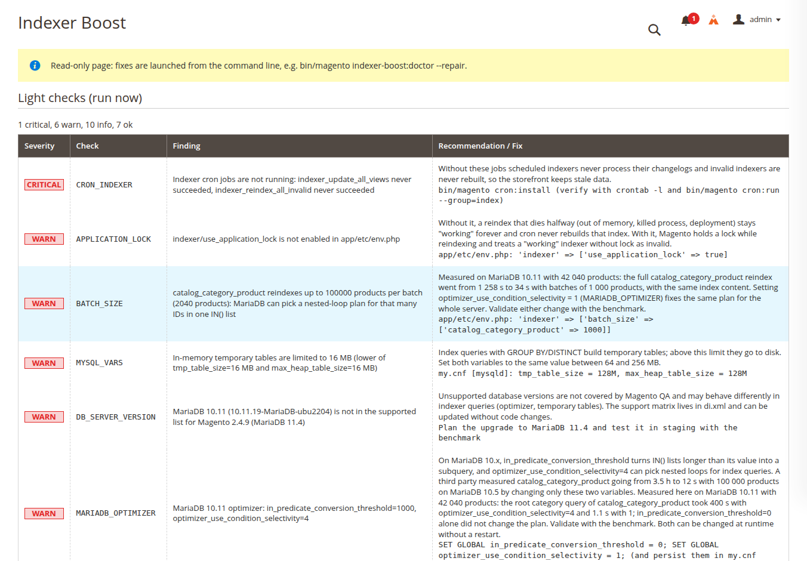
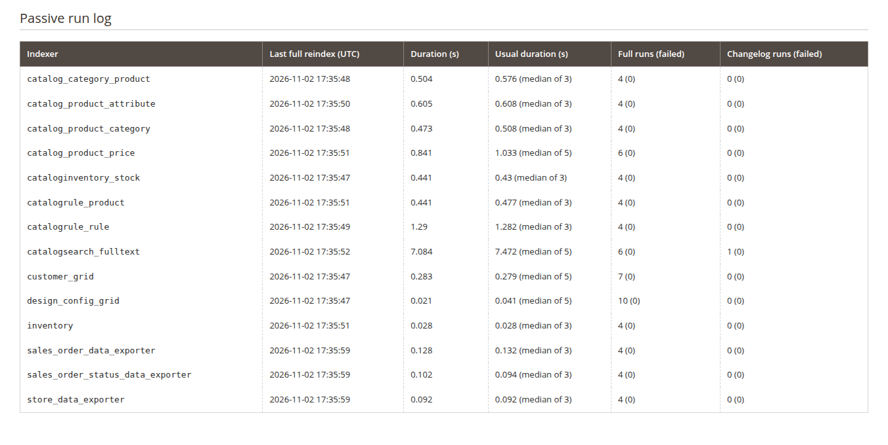
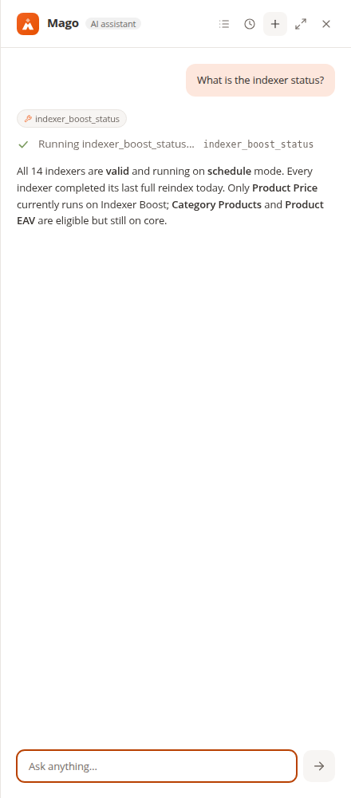
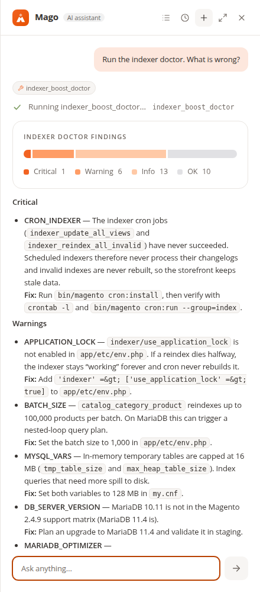
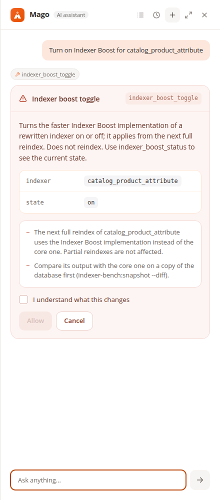

<title>Indexer Boost</title>
<meta name="claude:viewport-fit-sides" content="cover">
<meta name="description" content="Indexer Boost diagnoses, monitors and speeds up Magento 2 indexing.">
<link rel="preconnect" href="https://fonts.googleapis.com">
<link rel="preconnect" href="https://fonts.gstatic.com" crossorigin>
<link rel="stylesheet" href="https://fonts.googleapis.com/css2?family=Archivo:wdth,wght@112,600;112,800;100,500&family=IBM+Plex+Sans:wght@400;500;600&family=JetBrains+Mono:wght@400;600&display=swap">
<style>
/* Layout: one reading column with wide "printout" bands; the CLI and index tables are the visual language. */
:root {
  --paper: #f6f7f9;
  --sheet: #ffffff;
  --ink: #141820;
  --muted: #586173;
  --rule: #dde1e8;
  --accent: #e2571c;      /* Orangecat orange, used for Indexer Boost only */
  --accent-ink: #b8430f;
  --core: #2a6fc4;        /* Magento core in charts */
  --match: #0c7f5e;
  --warn: #9a6400;
  --crit: #c22f2f;
  --term-bg: #10141b;
  --term-ink: #dbe2ec;
  --term-dim: #8590a3;
  --display: "Archivo", "Helvetica Neue", Arial, sans-serif;
  --body: "IBM Plex Sans", "Segoe UI", system-ui, sans-serif;
  --mono: "JetBrains Mono", ui-monospace, SFMono-Regular, Menlo, monospace;
}
@media (prefers-color-scheme: dark) {
  :root:not([data-theme="light"]) {
    --paper: #0e1116; --sheet: #161a22; --ink: #e8ecf2; --muted: #a2abbb; --rule: #2a303b;
    --accent: #ff7436; --accent-ink: #ff9a68; --core: #4b8fe6; --match: #3cc29a; --warn: #e2a63a; --crit: #ff6b6b;
    --term-bg: #07090d; --term-ink: #dbe2ec; --term-dim: #7c879a;
    color-scheme: dark;
  }
}
:root[data-theme="dark"] {
  --paper: #0e1116; --sheet: #161a22; --ink: #e8ecf2; --muted: #a2abbb; --rule: #2a303b;
  --accent: #ff7436; --accent-ink: #ff9a68; --core: #4b8fe6; --match: #3cc29a; --warn: #e2a63a; --crit: #ff6b6b;
  --term-bg: #07090d; --term-ink: #dbe2ec; --term-dim: #7c879a;
  color-scheme: dark;
}
* { box-sizing: border-box; }
body { background: var(--paper); color: var(--ink); font-family: var(--body); font-size: 17px; line-height: 1.6; }
.wrap { max-width: 1120px; margin: 0 auto; padding-left: max(16px, env(safe-area-inset-left, 0px)); padding-right: max(16px, env(safe-area-inset-right, 0px)); }
a { color: var(--accent-ink); }
a:focus-visible { outline: 2px solid var(--accent); outline-offset: 3px; }
h1, h2, h3 { font-family: var(--display); text-wrap: balance; margin: 0; }
h2 { font-size: clamp(28px, 4vw, 40px); font-weight: 800; font-stretch: 112%; line-height: 1.1; letter-spacing: -0.01em; }
h3 { font-size: 19px; font-weight: 600; font-stretch: 112%; }
p { margin: 0; max-width: 64ch; }
code, .mono { font-family: var(--mono); font-size: 0.88em; }
.eyebrow { font-family: var(--mono); font-size: 12.5px; letter-spacing: 0.08em; text-transform: uppercase; color: var(--muted); }
.lede { color: var(--muted); font-size: 19px; }
section { padding-block: clamp(56px, 8vw, 96px); border-top: 1px solid var(--rule); }
.section-head { display: grid; gap: 14px; margin-bottom: 36px; }

/* Header */
header.top { padding-block: 22px; }
header.top .wrap { display: flex; align-items: center; justify-content: space-between; gap: 16px; flex-wrap: wrap; }
.brand { font-family: var(--display); font-weight: 800; font-stretch: 112%; font-size: 20px; display: flex; align-items: center; gap: 10px; }
.brand-mark { width: 22px; height: 22px; border-radius: 5px; background: var(--accent); display: grid; place-items: center; }
.brand-mark span { width: 10px; height: 3px; background: var(--paper); box-shadow: 0 -5px 0 var(--paper), 0 5px 0 var(--paper); border-radius: 1px; }
nav.links { display: flex; gap: 20px; flex-wrap: wrap; font-size: 15px; }
nav.links a { color: var(--muted); text-decoration: none; }
nav.links a:hover { color: var(--ink); }

/* Hero */
.hero { padding-block: clamp(32px, 6vw, 72px) clamp(56px, 8vw, 96px); }
.hero .wrap { display: grid; grid-template-columns: minmax(0, 1.05fr) minmax(0, 1fr); gap: clamp(28px, 5vw, 64px); align-items: center; }
.hero h1 { font-size: clamp(40px, 6.4vw, 76px); font-weight: 800; font-stretch: 112%; line-height: 0.98; letter-spacing: -0.02em; }
.hero h1 em { font-style: normal; color: var(--accent); }
.hero-copy { display: grid; gap: 22px; min-width: 0; }
.cta-row { display: flex; gap: 12px; flex-wrap: wrap; }
.btn { display: inline-flex; align-items: center; gap: 8px; padding: 12px 18px; border-radius: 8px; font-weight: 600; text-decoration: none; font-size: 16px; }
.btn.primary { background: var(--accent); color: #fff; }
.btn.primary:hover { background: var(--accent-ink); }
.btn.ghost { border: 1px solid var(--rule); color: var(--ink); background: var(--sheet); }
.facts { display: flex; gap: 22px; flex-wrap: wrap; font-size: 14px; color: var(--muted); }
.facts b { color: var(--ink); font-weight: 600; }

.term { background: var(--term-bg); color: var(--term-ink); border-radius: 12px; font-family: var(--mono); font-size: 13px; line-height: 1.65; min-width: 0; box-shadow: 0 20px 50px -24px rgba(10, 14, 22, 0.55); }
.term-bar { display: flex; gap: 6px; padding: 12px 14px; border-bottom: 1px solid rgba(255,255,255,0.08); }
.term-bar i { width: 10px; height: 10px; border-radius: 50%; background: #3a4150; }
.term pre { margin: 0; padding: 16px 18px 20px; overflow-x: auto; white-space: pre; }
.t-dim { color: var(--term-dim); }
.t-ok { color: #43d19e; font-weight: 600; }
.t-acc { color: #ff8a4f; }
.t-cmd { color: #fff; }

/* Chart */
.chart-card { background: var(--sheet); border: 1px solid var(--rule); border-radius: 12px; padding: clamp(18px, 3vw, 32px); }
.legend { display: flex; gap: 20px; flex-wrap: wrap; font-size: 14px; color: var(--muted); margin-bottom: 18px; }
.legend span { display: inline-flex; align-items: center; gap: 8px; }
.legend i { width: 12px; height: 12px; border-radius: 3px; display: inline-block; }
.bars { display: grid; gap: 26px; }
.bar-row { display: grid; grid-template-columns: minmax(0, 230px) minmax(0, 1fr); gap: 8px 20px; align-items: center; }
.bar-name { font-family: var(--mono); font-size: 14px; overflow-wrap: anywhere; }
.bar-name small { display: block; font-family: var(--body); color: var(--muted); font-size: 13px; }
.bar-pair { display: grid; gap: 4px; min-width: 0; }
.bar { display: grid; grid-template-columns: minmax(0, 1fr) 118px; align-items: center; gap: 10px; font-size: 13.5px; font-variant-numeric: tabular-nums; color: var(--muted); }
.track { display: block; min-width: 0; }
.bar s { text-decoration: none; display: block; height: 18px; border-radius: 0 4px 4px 0; min-width: 4px; }
.bar.core s { background: var(--core); }
.bar.boost s { background: var(--accent); }
.bar.boost { color: var(--ink); font-weight: 600; }
.axis { display: grid; grid-template-columns: minmax(0, 230px) minmax(0, 1fr); gap: 20px; margin-top: 10px; }
.axis div:last-child { display: flex; justify-content: space-between; margin-right: 128px; font-size: 12px; color: var(--muted); font-variant-numeric: tabular-nums; border-top: 1px solid var(--rule); padding-top: 6px; }
.chart-note { margin-top: 22px; font-size: 14px; color: var(--muted); max-width: none; }
.callout { margin-top: 28px; display: grid; grid-template-columns: auto minmax(0, 1fr); gap: 18px; align-items: start; padding: 20px 22px; border-left: 3px solid var(--match); background: var(--sheet); border-radius: 0 10px 10px 0; }
.callout .big { font-family: var(--display); font-weight: 800; font-stretch: 112%; font-size: 30px; line-height: 1; color: var(--match); font-variant-numeric: tabular-nums; white-space: nowrap; }

/* Doctor */
.split { display: grid; grid-template-columns: minmax(0, 1fr) minmax(0, 1.25fr); gap: clamp(24px, 4vw, 56px); align-items: start; }
.check-groups { display: grid; gap: 14px; }
.check-group { display: grid; grid-template-columns: 120px minmax(0, 1fr); gap: 12px; padding-bottom: 14px; border-bottom: 1px solid var(--rule); }
.check-group:last-child { border-bottom: 0; }
.check-group h3 { font-size: 15px; }
.codes { display: flex; flex-wrap: wrap; gap: 6px; }
.codes code { font-size: 11.5px; padding: 3px 7px; border-radius: 5px; background: var(--sheet); border: 1px solid var(--rule); color: var(--muted); }
.shot { margin: 0; display: grid; gap: 10px; min-width: 0; }
.shot img { display: block; width: 100%; height: auto; border-radius: 10px; border: 1px solid var(--rule); background: #fff; }
.shot figcaption { font-size: 13.5px; color: var(--muted); }
.findings { display: grid; gap: 10px; margin-top: 26px; }
.finding { display: grid; grid-template-columns: 82px minmax(0, 1fr); gap: 12px; align-items: baseline; font-size: 15px; }
.sev { font-family: var(--mono); font-size: 11px; font-weight: 600; letter-spacing: 0.06em; text-align: center; padding: 2px 0; border-radius: 4px; border: 1px solid currentColor; }
.sev.crit { color: var(--crit); }
.sev.warn { color: var(--warn); }
.sev.ok { color: var(--match); }

/* Three-up */
.three { display: grid; grid-template-columns: repeat(3, minmax(0, 1fr)); gap: 28px; }
.three > div { display: grid; gap: 10px; align-content: start; }
.three p { font-size: 15.5px; color: var(--muted); }
.kicker { font-family: var(--mono); font-size: 12px; color: var(--accent-ink); letter-spacing: 0.06em; text-transform: uppercase; }

/* Mago */
.mago-shots { display: grid; grid-template-columns: repeat(3, minmax(0, 1fr)); gap: 20px; }
.mago-shots img { aspect-ratio: 440 / 620; object-fit: cover; object-position: top; }

/* Guarantees */
.guarantees { display: grid; grid-template-columns: repeat(2, minmax(0, 1fr)); gap: 0; border-top: 1px solid var(--rule); }
.guarantee { display: grid; grid-template-columns: 34px minmax(0, 1fr); gap: 14px; padding: 22px 0; border-bottom: 1px solid var(--rule); }
.guarantee:nth-child(odd) { padding-right: 28px; }
.guarantee:nth-child(even) { padding-left: 28px; border-left: 1px solid var(--rule); }
.guarantee .tick { font-family: var(--mono); color: var(--match); font-weight: 600; }
.guarantee p { font-size: 15.5px; color: var(--muted); }
.guarantee h3 { margin-bottom: 4px; }

/* Install */
.install { display: grid; grid-template-columns: minmax(0, 1fr) minmax(0, 1fr); gap: 28px; align-items: start; }
.compat { display: grid; gap: 10px; font-size: 15px; }
.compat div { display: grid; grid-template-columns: 150px minmax(0, 1fr); gap: 12px; padding-bottom: 10px; border-bottom: 1px solid var(--rule); }
.compat dt, .compat span:first-child { color: var(--muted); }

footer { padding-block: 40px 56px; border-top: 1px solid var(--rule); color: var(--muted); font-size: 14px; }
footer .wrap { display: flex; justify-content: space-between; gap: 16px; flex-wrap: wrap; }

@media (max-width: 860px) {
  .hero .wrap, .split, .install { grid-template-columns: minmax(0, 1fr); }
  .three, .mago-shots { grid-template-columns: minmax(0, 1fr); }
  .mago-shots img { aspect-ratio: auto; }
  .guarantees { grid-template-columns: minmax(0, 1fr); }
  .guarantee:nth-child(n) { padding-left: 0; padding-right: 0; border-left: 0; }
  .bar-row, .axis { grid-template-columns: minmax(0, 1fr); }
  .axis div:first-child { display: none; }
  .check-group { grid-template-columns: minmax(0, 1fr); gap: 8px; }
}
@media (prefers-reduced-motion: no-preference) {
  .bar s { transform-origin: left; animation: grow 900ms cubic-bezier(.2,.7,.2,1) both; }
  .bar.boost s { animation-delay: 250ms; }
  @keyframes grow { from { transform: scaleX(0.04); } to { transform: scaleX(1); } }
}
</style>

<header class="top">
  <div class="wrap">
    <div class="brand"><span class="brand-mark" aria-hidden="true"><span></span></span>Indexer Boost</div>
    <nav class="links" aria-label="Sections">
      <a href="#numbers">Numbers</a>
      <a href="#doctor">Doctor</a>
      <a href="#mago">Mago</a>
      <a href="#safety">Safety</a>
      <a href="#install">Install</a>
    </nav>
  </div>
</header>

<main>
  <div class="hero">
    <div class="wrap">
      <div class="hero-copy">
        <div class="eyebrow">For Magento 2.4.6 – 2.4.9</div>
        <h1>Faster Magento reindexes. <em>Identical rows.</em></h1>
        <p class="lede">Indexer Boost finds out why indexing is slow or stuck, records every reindex in production, and rewrites three core full reindexes to run up to 74% faster, with output checked row by row against the core.</p>
        <div class="cta-row">
          <a class="btn primary" href="#numbers">See the benchmarks</a>
          <a class="btn ghost" href="#doctor">What the doctor checks</a>
        </div>
        <div class="facts">
          <span><b>26</b> read-only checks</span>
          <span><b>3</b> rewritten reindexes</span>
          <span><b>0</b> third-party dependencies</span>
        </div>
      </div>
      <div class="term" role="img" aria-label="Benchmark compare output: catalog_category_product, core 1 851.9 seconds, Indexer Boost 461.3 seconds, output MATCH on 6 063 046 rows">
        <div class="term-bar" aria-hidden="true"><i></i><i></i><i></i></div>
<pre aria-hidden="true"><span class="t-dim">$</span> <span class="t-cmd">bin/bench-magento indexer-bench:compare \
    -i catalog_category_product \
    --baseline=core-large-b1000 --candidate=boost-snap-large-b1000</span>

<span class="t-dim">Catalog:</span> 502 040 products, 5 store views
<span class="t-dim">Fingerprint:</span> OK (same catalog, database and versions)

<span class="t-dim">| Metric      | Baseline | Candidate | Δ      |</span>
| wall_time_s | 1 851.9  | <span class="t-acc">461.3</span>     | <span class="t-acc">-75.1%</span> |

<span class="t-dim">Output:</span> <span class="t-ok">MATCH</span> (6 063 046 rows)
<span class="t-dim">No regression over 10%</span></pre>
      </div>
    </div>
  </div>

  <section id="numbers">
    <div class="wrap">
      <div class="section-head">
        <div class="eyebrow">Measured, not promised</div>
        <h2>Full reindex time on 502 040 products</h2>
        <p class="lede">Generated catalog, 5 store views, Magento 2.4.9, PHP 8.5, MariaDB 10.11, one process. Every Indexer Boost run produced exactly the same index tables as the core.</p>
      </div>
      <div class="chart-card">
        <div class="legend" aria-hidden="true">
          <span><i style="background: var(--core)"></i>Magento core</span>
          <span><i style="background: var(--accent)"></i>Indexer Boost</span>
        </div>
        <div class="bars" role="table" aria-label="Full reindex time in seconds">
          <div class="bar-row" role="row">
            <div class="bar-name" role="rowheader">catalog_category_product<small>Category products</small></div>
            <div class="bar-pair" role="cell">
              <div class="bar core" title="Core: 1 796 s"><span class="track"><s style="width: 99.8%"></s></span><span>1 796 s</span></div>
              <div class="bar boost" title="Indexer Boost: 461 s"><span class="track"><s style="width: 25.6%"></s></span><span>461 s · −74%</span></div>
            </div>
          </div>
          <div class="bar-row" role="row">
            <div class="bar-name" role="rowheader">catalog_product_attribute<small>Product EAV</small></div>
            <div class="bar-pair" role="cell">
              <div class="bar core" title="Core: 664 s"><span class="track"><s style="width: 36.9%"></s></span><span>664 s</span></div>
              <div class="bar boost" title="Indexer Boost: 268 s"><span class="track"><s style="width: 14.9%"></s></span><span>268 s · −60%</span></div>
            </div>
          </div>
          <div class="bar-row" role="row">
            <div class="bar-name" role="rowheader">catalog_product_price<small>Product price</small></div>
            <div class="bar-pair" role="cell">
              <div class="bar core" title="Core: 1 024 s (median of 3 runs)"><span class="track"><s style="width: 56.9%"></s></span><span>1 024 s</span></div>
              <div class="bar boost" title="Indexer Boost: 790 s"><span class="track"><s style="width: 43.9%"></s></span><span>790 s · −23%</span></div>
            </div>
          </div>
        </div>
        <div class="axis" aria-hidden="true"><div></div><div><span>0 s</span><span>600 s</span><span>1 200 s</span><span>1 800 s</span></div></div>
        <p class="chart-note">Core price time is the median of three runs (963–1 039 s). Raw reports with every metric ship with the documentation.</p>
      </div>
      <div class="callout">
        <div class="big">1 258 s → 34 s</div>
        <p>Sometimes the slowdown is configuration, and the doctor says so. On a 42 040-product catalog, MariaDB picked a nested-loop plan for the core's default batch of 100 000 products. One line in <code>env.php</code> fixed it. <code>BATCH_SIZE</code> and <code>MARIADB_OPTIMIZER</code> now detect it on any store.</p>
      </div>
    </div>
  </section>

  <section id="doctor">
    <div class="wrap">
      <div class="section-head">
        <div class="eyebrow">bin/magento indexer-boost:doctor</div>
        <h2>A diagnosis you can act on</h2>
        <p class="lede">Each finding comes with the measured values, why it matters and the exact fix: a command, a line of configuration or a place in the admin. Exit code 1 on a critical finding, so it can gate a deployment.</p>
      </div>
      <div class="split">
        <div>
          <div class="check-groups">
            <div class="check-group"><h3>Indexers</h3><div class="codes"><code>INDEXER_MODE</code><code>INDEXER_STATE</code><code>INDEXER_STUCK</code><code>APPLICATION_LOCK</code></div></div>
            <div class="check-group"><h3>Cron</h3><div class="codes"><code>CRON_INDEXER</code><code>MVIEW_BACKLOG</code><code>REINDEX_CHURN</code><code>CATALOG_RULE_CRON</code></div></div>
            <div class="check-group"><h3>Settings</h3><div class="codes"><code>BATCH_SIZE</code><code>PARALLEL_THREADS</code><code>PRICE_DIMENSIONS</code><code>DATA_EXPORTERS</code></div></div>
            <div class="check-group"><h3>Database</h3><div class="codes"><code>MYSQL_VARS</code><code>MARIADB_OPTIMIZER</code><code>DB_SERVER_VERSION</code><code>TABLE_STATS</code></div></div>
            <div class="check-group"><h3>Data</h3><div class="codes"><code>EAV_ORPHANS</code><code>EAV_REDUNDANT_STORE_VALUES</code><code>ATTRIBUTE_FLAGS</code><code>CATALOG_RULES</code><code>CUSTOMER_GROUP_WEBSITES</code><code>EAV_INDEXER</code><code>CATALOG_SIZE</code></div></div>
            <div class="check-group"><h3>History</h3><div class="codes"><code>REINDEX_REGRESSION</code><code>BOOST_STATUS</code><code>BOOST_COMPATIBILITY</code></div></div>
          </div>
          <div class="findings" aria-label="Example findings">
            <div class="finding"><span class="sev crit">CRITICAL</span><span>Index cron jobs never succeeded: changelogs are never applied.</span></div>
            <div class="finding"><span class="sev warn">WARN</span><span>Imports reindex <code>catalog_product_price</code> per batch and leave <code>catalogsearch_fulltext</code> stale.</span></div>
            <div class="finding"><span class="sev warn">WARN</span><span>Full reindexes ran at the same time 6 times in the last 24 h.</span></div>
            <div class="finding"><span class="sev ok">OK</span><span>No other module intercepts the classes Indexer Boost hooks into.</span></div>
          </div>
        </div>
        <figure class="shot">
          
          <figcaption>System › Tools › Indexer Boost. Light checks run on every page load; heavy scans come from the last CLI run.</figcaption>
        </figure>
      </div>
    </div>
  </section>

  <section>
    <div class="wrap">
      <div class="section-head">
        <div class="eyebrow">Diagnose · Watch · Speed up</div>
        <h2>Three layers, one module</h2>
      </div>
      <div class="three">
        <div>
          <div class="kicker">Watch</div>
          <h3>Every reindex, recorded</h3>
          <p>A passive monitor stores the duration and error of every real full reindex and changelog run. The doctor flags a reindex that suddenly takes twice its usual time, and indexing that piles up after imports and API bursts.</p>
        </div>
        <div>
          <div class="kicker">Repair</div>
          <h3>Stuck indexers, released</h3>
          <p><code>--repair</code> releases indexers left in <code>working</code> by a dead process (no lock held, no write running on their tables) and reindexes the invalid ones. It never changes configuration.</p>
        </div>
        <div>
          <div class="kicker">Measure</div>
          <h3>Benchmark any change</h3>
          <p>A development module runs reindexes on a database copy, stores metrics with an environment fingerprint, and proves two indexes are identical with canonical checksums. Use it for upgrades, MySQL settings or third-party modules.</p>
        </div>
      </div>
      <figure class="shot" style="margin-top: 40px">
        
        <figcaption>The passive run log on the admin page: last and usual duration of every indexer.</figcaption>
      </figure>
    </div>
  </section>

  <section id="mago">
    <div class="wrap">
      <div class="section-head">
        <div class="eyebrow">Add-on for Mago, MIT licence</div>
        <h2>Ask the admin assistant</h2>
        <p class="lede">With <a href="https://askmago.com/" rel="noopener">Mago</a>, administrators ask in plain language. Answers come from the same doctor and run log as the command line, and switching a rewrite waits for an administrator's confirmation.</p>
      </div>
      <div class="mago-shots">
        <figure class="shot"><figcaption>“What is the indexer status?”</figcaption></figure>
        <figure class="shot"><figcaption>“Run the indexer doctor. What is wrong?”</figcaption></figure>
        <figure class="shot"><figcaption>“Turn on Indexer Boost for catalog_product_attribute”</figcaption></figure>
      </div>
    </div>
  </section>

  <section id="safety">
    <div class="wrap">
      <div class="section-head">
        <div class="eyebrow">Built for production</div>
        <h2>Safe by construction</h2>
      </div>
      <div class="guarantees">
        <div class="guarantee"><span class="tick">✓</span><div><h3>Read-only diagnosis</h3><p>Checks get a connection that rejects anything but reads. A test runs every check against a database and filesystem that record any write.</p></div></div>
        <div class="guarantee"><span class="tick">✓</span><div><h3>Same output or it doesn't ship</h3><p>Each rewrite matched the core table by table on 502 040 products, also with two processes where the core supports them.</p></div></div>
        <div class="guarantee"><span class="tick">✓</span><div><h3>Off by default, reversible</h3><p>Each rewrite is a flag: <code>indexer-boost:toggle &lt;indexer&gt; on|off</code>. It applies on the next reindex, without recompiling.</p></div></div>
        <div class="guarantee"><span class="tick">✓</span><div><h3>Plugins, not rewrites of core classes</h3><p>Around plugins on the core actions. The doctor warns when another module hooks into the same classes.</p></div></div>
        <div class="guarantee"><span class="tick">✓</span><div><h3>No third-party code</h3><p>The production module depends on Magento core modules only. Only the Mago add-ons depend on Mago.</p></div></div>
        <div class="guarantee"><span class="tick">✓</span><div><h3>Tested</h3><p>Over 570 unit tests and 68 integration tests on a real database, PHPStan level 8 and the Magento coding standard.</p></div></div>
      </div>
    </div>
  </section>

  <section id="install">
    <div class="wrap">
      <div class="section-head">
        <div class="eyebrow">Get started</div>
        <h2>Install and run the doctor</h2>
      </div>
      <div class="install">
        <div class="term">
          <div class="term-bar" aria-hidden="true"><i></i><i></i><i></i></div>
<pre><span class="t-dim">$</span> <span class="t-cmd">bin/magento module:enable Orangecat_IndexerBoost</span>
<span class="t-dim">$</span> <span class="t-cmd">bin/magento setup:upgrade</span>
<span class="t-dim">$</span> <span class="t-cmd">bin/magento indexer-boost:doctor</span>
<span class="t-dim">Summary: 1 critical, 6 warn, 13 info, 10 ok</span>

<span class="t-dim"># when a staging benchmark says MATCH</span>
<span class="t-dim">$</span> <span class="t-cmd">bin/magento indexer-boost:toggle catalog_product_price on</span></pre>
        </div>
        <div class="compat">
          <div><span>Magento</span><span>2.4.6 – 2.4.9 (tested on Open Source 2.4.9)</span></div>
          <div><span>PHP</span><span>8.2 – 8.5</span></div>
          <div><span>Database</span><span>MySQL and MariaDB; benchmarks on MariaDB 10.11</span></div>
          <div><span>Mago add-ons</span><span>Magento 2.4.9 or Mage-OS 3.0, Mago 1.1</span></div>
          <div><span>Not covered</span><span>Adobe Commerce content staging in the rewrites' identity tests</span></div>
        </div>
      </div>
    </div>
  </section>
</main>

<footer>
  <div class="wrap">
    <span>Indexer Boost by Orangecat</span>
    <span>Figures from stored benchmark runs, 2026-11-02</span>
  </div>
</footer>
